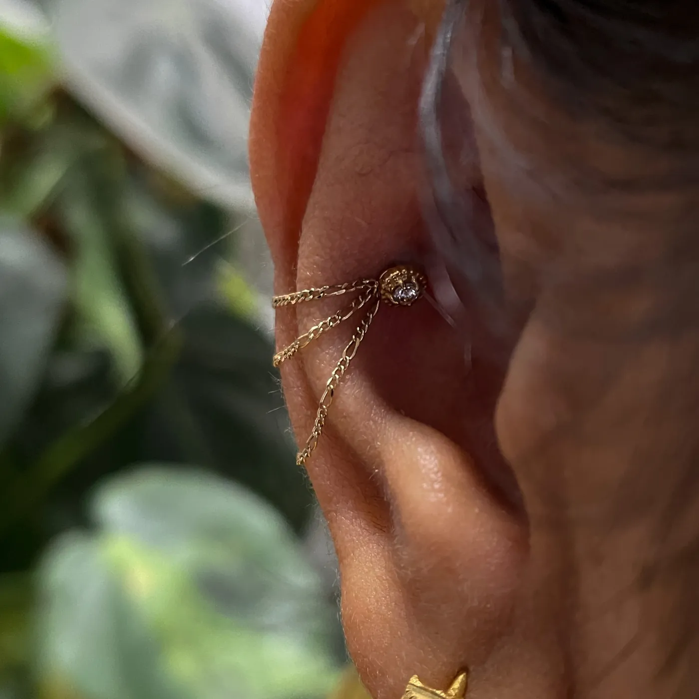
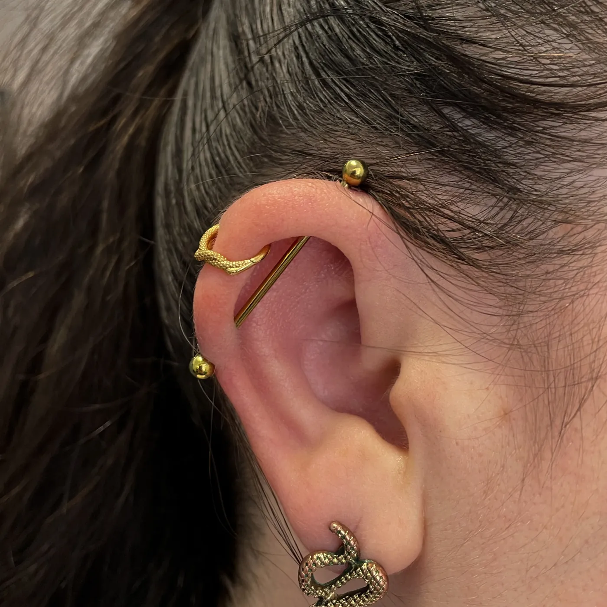
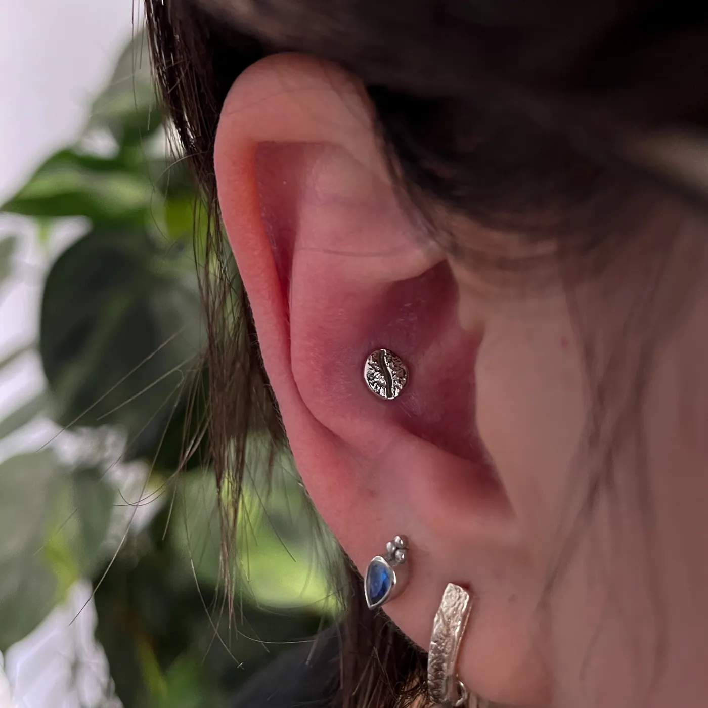
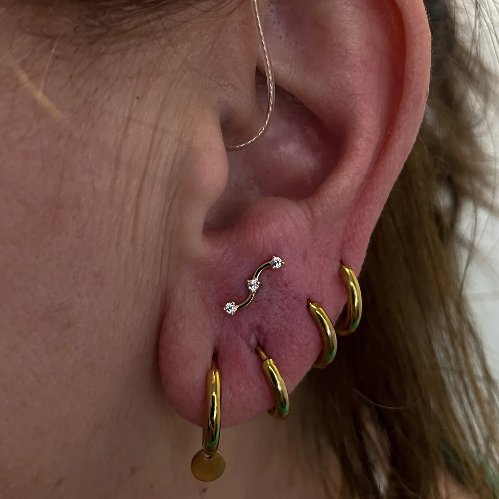
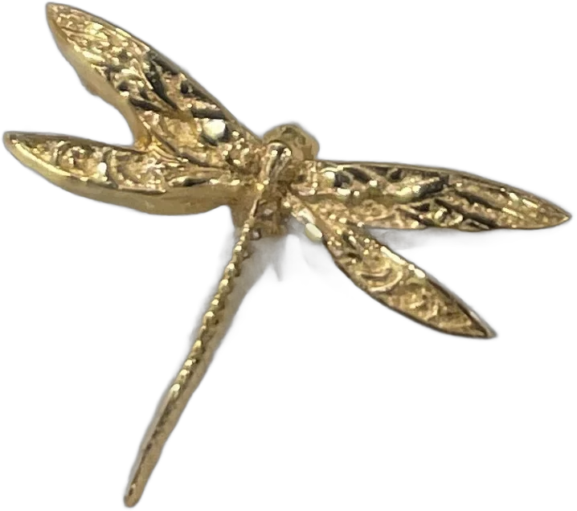
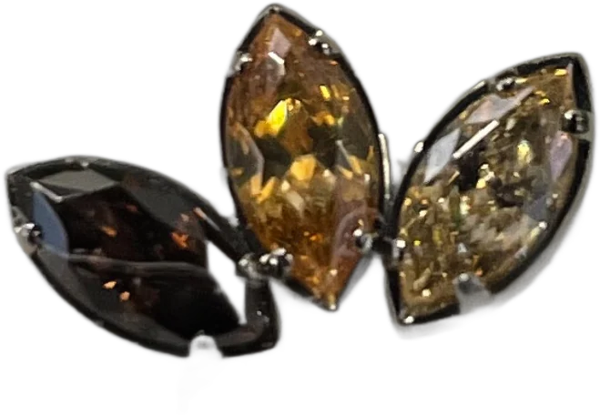
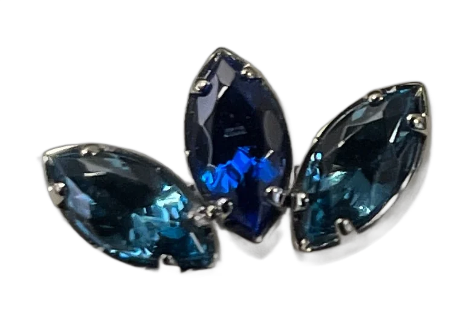

Eén piercing
Lobe, helix, conch, tragus, daith, rook, neus of septum. Ook navel, lip en wenkbrauw, vanaf 18 jaar.
€80per piercing
Ik ben Ils. In mijn studio in de Baudelostraat werk ik enkel op afspraak, zodat ik echt tijd heb voor jou. We bekijken samen je oor, ik leg elke stap uit en we beginnen pas als jij er klaar voor bent.

Bij Maanlicht pierce ik alles zelf, met Kiwami-naalden en materiaal van ProBodyArt. Ik kijk eerst naar je anatomie, want niet elke piercing past bij elk oor. Klopt het niet, dan zeg ik dat eerlijk en zoeken we samen iets dat wel mooi wordt.
Zenuwachtig? Dat is heel normaal. We nemen de tijd, ik vraag onderweg hoe het met je gaat en alles is bespreekbaar.



Elke prijs is inclusief een basisjuweel in implant grade titanium. Kies je liever goud of een juweel met een steentje, dan betaal je enkel het verschil.
Lobe, helix, conch, tragus, daith, rook, neus of septum. Ook navel, lip en wenkbrauw, vanaf 18 jaar.
Twee piercings in één sessie, bijvoorbeeld een lobe en een helix, of twee lobes naast elkaar.
Een volledige opbouw in één keer. We kiezen samen de plaatsen en de juwelen, zodat alles bij elkaar past.
Ik werk met merken die ik zelf vertrouw, in titanium en massief goud. Zie je iets dat je mooi vindt, stuur me dan gerust een berichtje of een mail.

Met de hand gemaakt in 14 of 18 karaat, zoals deze libel van Anatometal. Mooi in je oor, maar ook in je neus.

Implant grade titanium, met steentjes in elke tint. Het titanium kan ook goudkleurig geanodiseerd worden.

Veel van deze juwelen passen zowel in een nieuwe piercing als in eentje die al lang genezen is.
★★★★★"Ils is de liefste, meest respectvolle en rustigste persoon die je je kunt inbeelden. Ze stelt je enorm op je gemak en legt alles wat ze doet perfect uit. Ze checkt constant je grenzen en alles is bespreekbaar. Ik zou nooit meer bij iemand anders willen gaan 💜"
★★★★★"Heel heel lief, ik draag een hoofdoek waardoor het een beetje moeilijk is om een piercer te vinden maar voel me zo veilig bij haar. Alles wordt goed uitgelegd voordat er iets gedaan wordt, ook super professioneel en hygiënisch."
★★★★★"Ils is een kalme persoon en verwelkomt je meteen als je de shop binnen wandelt. Door haar rustige aanpak zorgt ze ervoor dat je piercing met precisie gestoken wordt. Ze geeft je graag alle details en uitleg en zorgt ervoor dat je genoeg bijstand krijgt bij de healing."
Je boekt rechtstreeks online, of je stuurt me eerst een berichtje als je nog twijfelt over wat bij je oor past.
Via de boekingspagina zie je meteen wanneer ik vrij ben.
We bespreken plaats en juweel, en pas daarna gaan we van start.
Zo volg ik mee op hoe je piercing geneest.
Twijfel je nog?Stuur me een berichtje en we bekijken samen wat bij je oor past.
Stuur een DMIk maakte deze demo voor jullie om te tonen wat er kan. Na een kort gesprek maak ik er iets veel persoonlijkers van, helemaal naar jullie wens.
Vrijblijvend. Ik kom langs of we bellen.
Op maat, op jullie eigen domein.
Geen voorschot. Jullie betalen pas als alles klaar is.
Hosting, domeinnaam en kleine wijzigingen, zoals nieuwe openingsuren.
Omdat een voorbeeld meer zegt dan een mail. Zo zien jullie meteen wat er kan, en het kost jullie niets.
Nee. Het gesprek is vrijblijvend. Vinden jullie het niks, dan is het daarmee gedaan.
Na ons gesprek staat jullie site binnen 10 tot 14 dagen online.
Zeker. Jullie domeinnaam kan gewoon blijven, de nieuwe site komt in de plaats van de oude.
Nee, dat doe ik op basis van ons gesprek. Eigen foto's zijn mooi meegenomen, maar niet nodig om te starten.